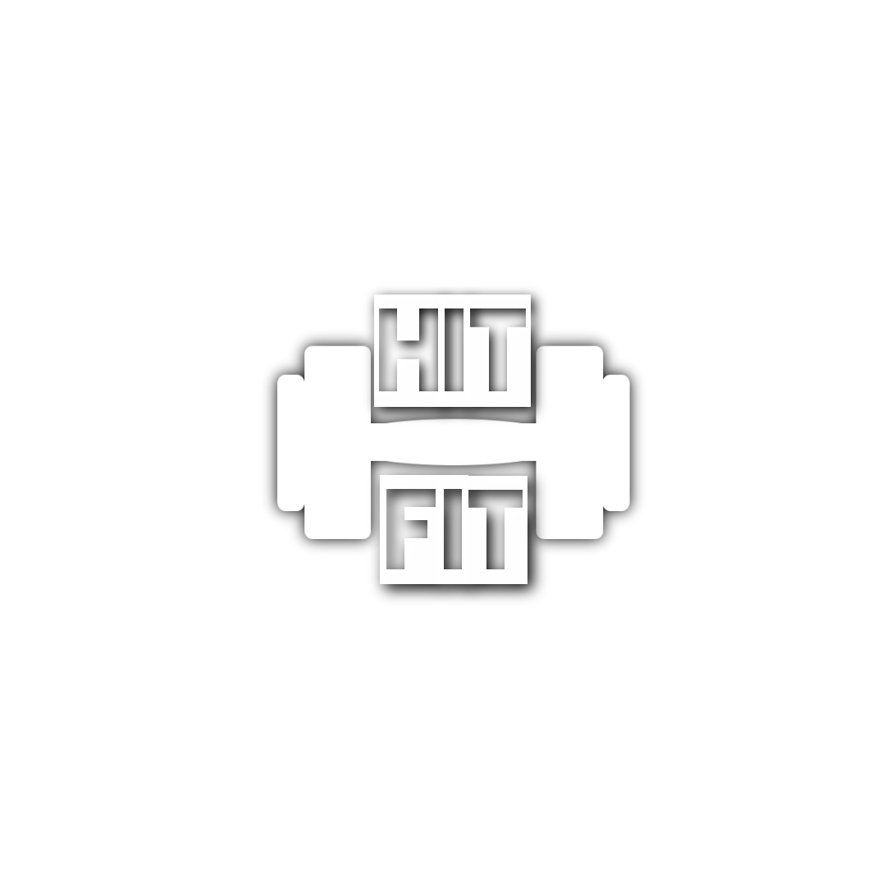
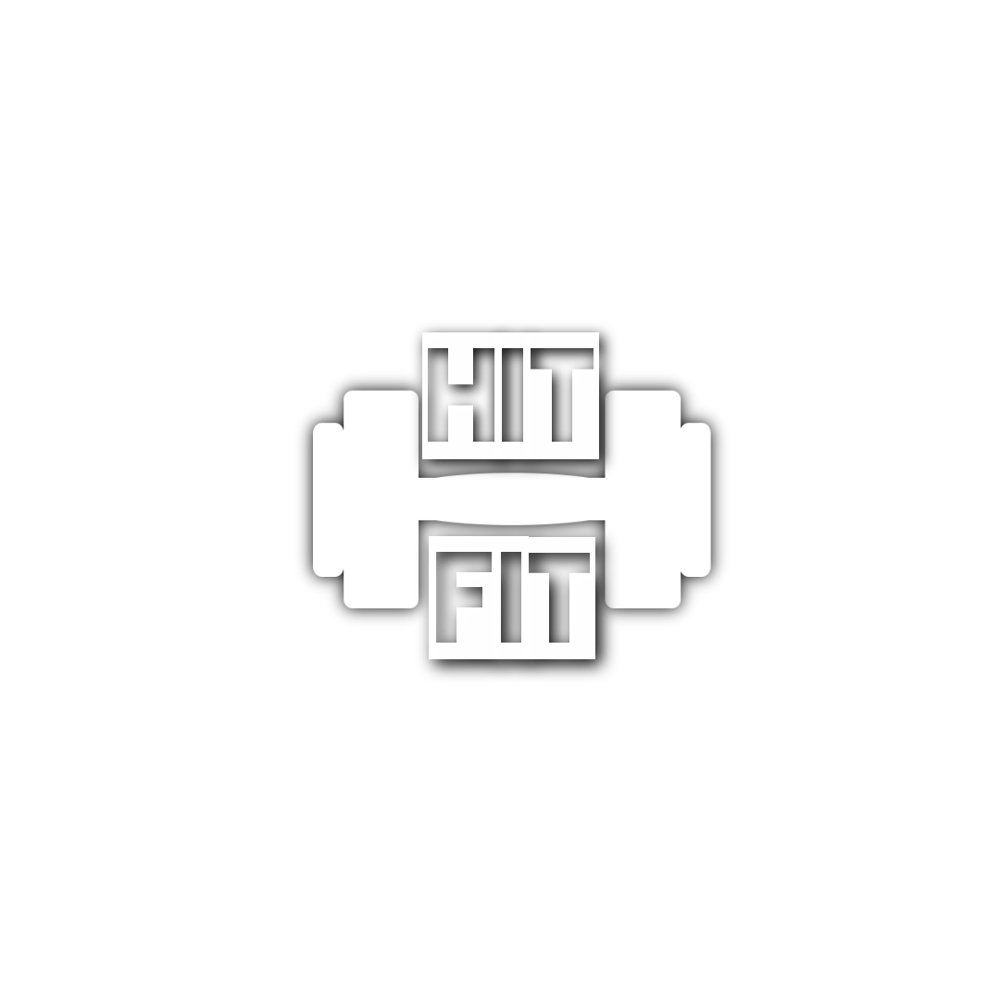

Caro fitfriend,
Vou te fazer uma pergunta...
Qual a primeira coisa que vem a sua mente quando pensa em exercício físico?
A maioria das pessoas evoca imagens de passar incontáveis horas na academia todas as semanas, fazendo exercícios extenuantes e monótonos ...
Fazendo corridas longas e intermináveis de vários quilômetros ...
Músculo dolorido e dolorido…
E ter que esperar semanas ou até meses para começar a ver qualquer tipo de resultado decente…
Parece HORRÍVEL, não é?
A boa notícia é ...
O fato é este ...
Você NÃO precisa passar incontáveis horas na academia a cada semana para obter resultados.
Você sabia que malhar demais pode, na verdade, retardar os resultados que você busca malhando ?
É verdade.
O excesso de exercícios é um dos principais motivos pelos quais as pessoas lutam para obter resultados e, em alguns casos, até acabam se machucando.
Se você quer realmente derreter gordura, construir músculos e ficar mais forte mais rápido do que nunca ...
Se você não está familiarizado com o treinamento intervalado de alta intensidade que lhe ensinaremos aqui no HIT FIT, precisa prestar muita atenção ...
É aqui que o HIT FIT é superior a quase qualquer programa de perda de peso ou de fortalecimento muscular que existe ...
Neste ponto, você provavelmente está se perguntando ...
O maior motivo é porque as pessoas realmente acreditam que quanto mais longos e frequentes seus treinos, melhores resultados você obterá ...
Embora isso não seja verdade, muitas pessoas simplesmente não estão por dentro ou provavelmente NUNCA ouviu falar sobre o HIT FIT.
E embora o HIT FIT seja muito simples, obter resultados tem tudo a ver com os detalhes…
Se você fizer as coisas da maneira certa, poderá obter resultados ENORMES com extrema rapidez ...
... mas se você fizer algo errado, você corre o risco de não obter resultados sólidos, perder tempo ou até mesmo se arriscar a se machucar.
Não quero que NENHUMA dessas coisas aconteça com você.
É importante que você tenha alguém que lhe mostre o caminho, assim como fazemos aqui no HIT FIT para você conhecer “o que há de melhor”.
Por causa de toda a desinformação por aí sobre o treinamento intervalado de alta intensidade, eu juntei o que há de melhor para mostrar a você como perder peso e construir músculos com HIT FIT... do jeito certo!
Descubra porque este treinamento é EXATAMENTE o que você busca
Quando se trata de treinamento intervalado de alta intensidade, muitas pessoas simplesmente não sabem exatamente por onde começar.
Na verdade, existem muitos recursos por aí, mas a maioria das pessoas fica confusa quando começa a tentar descobrir tudo por conta própria. Infelizmente, algumas pessoas ficam tão confusas que acabam contratando um personal trainer ou especialista em fitness apenas para orientá-las na direção certa ...
Claro, isso pode ser EXTREMAMENTE caro.
Se você fosse contratar um especialista em condicionamento físico ou um treinador particular para mostrar como ficar em ótima forma assim como lhe ensinaremos aqui no HIT FIT, acabaria gastando centenas ou até milhares de reais...
A boa notícia é que este guia é a segunda melhor opção depois de contratar um instrutor particular, e você não terá que investir centenas ou milhares de reais hoje quando decidir contratá-lo.
Como este guia é tão poderoso e tem o potencial de economizar centenas de reais e incontáveis horas, ele normalmente é vendido por R$ 97 ....
Eu, pessoalmente, dediquei minha vida a fornecer condicionamento físico de alta qualidade, perda de peso e treinamento de fortalecimento muscular para as pessoas que mais precisam, então realmente quero eliminar um obstáculo que impediria você de colocar suas mãos sobre isso hoje ....
... é por isso que decidi cortar o preço do meu guia completo para entrar na melhor forma da sua vida com o HIT FIT por um tempo limitado ...
Você não vai pagar R$ 97 hoje.
Na verdade, você nem vai investir R$ 47
Caso você decida atingir a forma física dos seus sonhos hoje, pode obter ACESSO INSTANTÂNEO por apenas R$44
E este negócio está prestes a ficar ainda mais doce
Este bônus contêm dicas para uma verificação útil que facilita começar a queimar gordura e construir músculos com treinamento intervalado de alta intensidade.
Ela divide todo o guia em etapas fáceis de seguir para que você possa ter certeza de ter todos os benefícios do HIIT ao seu alcance ... Isso torna muito mais fácil acompanhar o seu progresso e manter o foco para conquistar a melhor forma física da sua vida.
Algumas pessoas aprendem melhor olhando um mapa mental. Este mapa mental oferece uma visão geral de tudo o que foi abordado neste roteiro para obter os melhores resultados com o treinamento intervalado de alta intensidade. Você também pode imprimi-lo para referência rápida sempre que precisar!
O Guia de Recursos fornece um ponto de referência rápido para todos os recursos mencionados ao longo deste guia o que torna este guia muito importante.
Isso torna mais fácil o acesso as ferramentas para você queimar gordura e construir músculos sem gastar uma quantidade absurda de tempo dentro da academia todos os dias ...
Este guia tem tudo que você precisa para obter resultados com treinamento intervalado de alta intensidade
Nenhuma pedra é deixada sobre pedra e você tem tudo que precisa para queimar gordura e construir músculos rapidamente
Posso continuar dizendo como este guia é ÓTIMO ou posso apenas mostrar a você.
Você realmente precisa ver isso com seus próprios olhos para ver como isso realmente é passo a passo e fácil de seguir.
Embora já tenha reduzido o preço para tornar isso extremamente acessível, não quero que nada impeça você de colocar as mãos nisso hoje e usá-lo para entrar na melhor forma física da sua vida.
É por isso que vou dar a você 7 dias COMPLETOS para decidir se isso é para você.
Se por algum motivo, você não estiver 100% satisfeito com o que contém, basta me enviar um e-mail e eu reembolsarei cada centavo do seu pequeno investimento.
Sem perguntas!
Muito obrigado por dedicar seu tempo para dar uma olhada nesta oferta extremamente limitada que lhe dará tudo que você precisa para derreter gordura, construir músculos e ficar em ótima forma com exercícios curtos de alta intensidade ... isso muda tudo e torna mais fácil do que nunca conseguir a melhor forma física da sua vida.
Mal posso esperar para ver você revolucionando seu corpo!
HIT FIT
PS - Compilei algumas das perguntas mais frequentes sobre o uso do HIT FIT para obter resultados rápidos ...
Q. Do que se trata?
A. O mundo da saúde e do condicionamento físico está mudando.
Onde as máquinas de exercícios, suplementos e treinos longos e cansativos já dominaram o mundo do condicionamento físico, as pessoas estão obtendo melhores resultados do que nunca ao se concentrar no short, exercícios de alta intensidade. Neste guia, você descobrirá como entrar na melhor forma da sua vida com o HIT FIT.
Q. É sobre perder peso?
A. Perder peso é apenas parte disso. Este guia mostrará exatamente como queimar gordura, construir músculos e entrar na melhor forma de sua vida sem gastar incontáveis horas por semana na academia. O treinamento intervalado de alta intensidade é rápido, eficaz e muito divertido.
Q. Quanto tempo até eu ver os resultados?
A. As informações contidas têm o potencial de começar a fornecer resultados visíveis em apenas algumas semanas. Claro, o objetivo é dar a você um plano de condicionamento físico que você possa realmente fazer de forma consistente e manter o foco até atingir seus objetivos ...
Está provado várias vezes que as pessoas obtêm melhores resultados com treinos curtos e de alta intensidade do que os programas mais tradicionais que você encontraria em uma academia. Neste guia, você obtém tudo o que precisa para ver resultados de condicionamento físico rápidos e duradouros.
Q. Como este guia é entregue?
A. Você terá acesso instantâneo a uma versão digital deste guia, juntamente com links para download de todos os bônus incluídos. Não há espera quando você clica no botão de compra ...
Q. Como este guia é entregue?
A. Você terá acesso instantâneo a uma versão em PDF deste guia, juntamente com links para download para o restante dos bônus. Não há espera ... Você pode começar AGORA MESMO.
Q. Quanto?
A. Embora normalmente seja vendido por R$ 199, eu cortei o preço substancialmente para torná-lo acessível a todos. Minha missão é ajudá-lo a entrar na melhor forma de sua vida usando o HIT FIT.
Estou deixando isso passar por um preço tão baixo, porque sei o quão poderoso isso será para você. Mas, por favor, não espere, pois o preço aumentará muito em breve. Se você voltar mais tarde, pode acabar pagando mais por isso.
Q. Existe uma garantia?
A. Pode apostar. Você tem 7 dias completos para garantir que isso seja para você. Se por algum motivo, você não estiver 100% satisfeito, basta enviar-me um e-mail e eu reembolsarei cada centavo do seu minúsculo investimento.
Sem perguntas.
Q. Como obtenho ACESSO INSTANTÂNEO?
Clique no botão abaixo agora